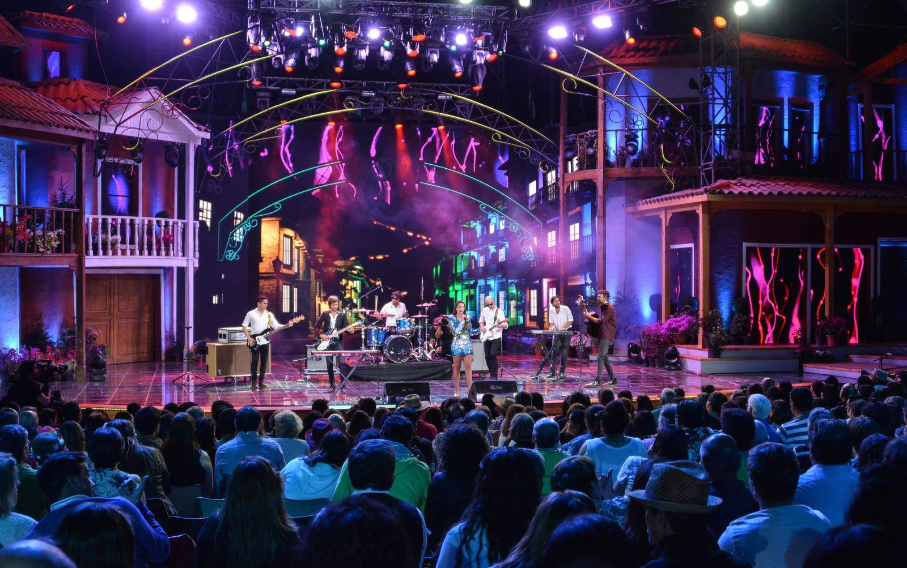

Festivals · Music
Festival del Huaso de Olmué 2027
- Dates
- –
- Venue
- Parque El Patagual
- Location
- Olmué, Chile
- Format
- In-person
- Category
- Music
- Industry
- Music festival / Folklore / Television
- Organiser
- Municipalidad de Olmué
- Official website
- https://www.festivaldelhuaso.cl/
About
56th (LVI) edition; includes a folk-song competition. Chile dates are local (mainland Chile time: UTC-3 in the southern summer, UTC-4 in winter; Easter Island is two hours behind the mainland).
Topics: Chilean folk music, huaso culture, comedy, live TV.
No organiser attendance figure found on the official pages checked (24 Nov 2026). Ranked by an estimated size tier 'large' (about 10,000-100,000 attendees; our judgement from format, venue and scale, not an official number).
Sources
- Official — https://www.festivaldelhuaso.cl/
- Previous listing (festival news post) — https://www.festivaldelhuaso.cl/news_data.php?id=241